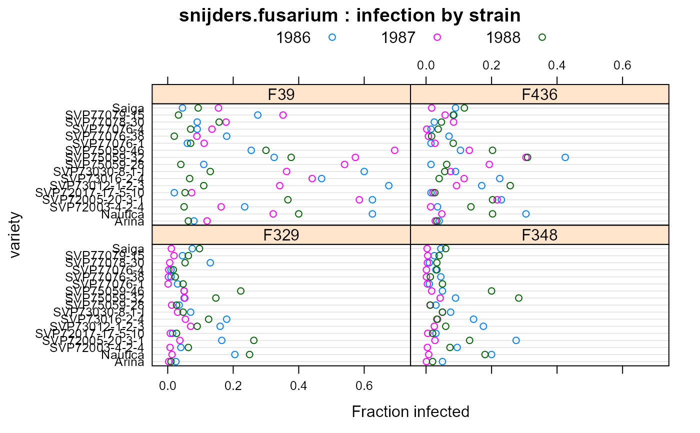
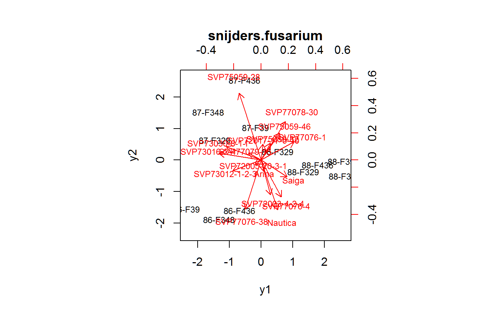

snijders.fusarium.RdInfection in wheat by different strains of Fusarium.
A data frame with 204 observations on the following 4 variables.
genwheat genotype
strainfusarium strain
yearyear
ypercent infected
The data are the percent of leaf area affected by Fusarium head blight, averaged over 4-5 reps, for 17 winter wheat genotypes.
Van Eeuwijk fit a generalized ammi-2 model to this data. It is a generalized model in the sense that a link function is used, and is a non-linear AMMI model in that there are main effects for variety and year-strain, but additional multiplicative effects for the interactions.
Note, the value for strain F348 in 1988, gen SVP75059-32 should be 28.3 (as shown in VanEeuwijk 1995) and not 38.3 (as shown in Snijders 1991).
Used with permission of Fred van Eeuwijk.
Snijders, CHA and Van Eeuwijk, FA. 1991. Genotype x strain interactions for resistance to Fusarium head blight caused by Fusarium culmorum in winter wheat. Theoretical and Applied Genetics, 81, 239--244. Table 1. https://doi.org/10.1007/BF00215729
Fred A van Eeuwijk. 1995. Multiplicative interaction in generalized linear models. Biometrics, 51, 1017-1032. https://doi.org/10.2307/2533001
library(agridat) data(snijders.fusarium) dat <- snijders.fusarium aggregate(y ~ strain + year, dat, FUN=mean) # Match means in Snijders table 1#> strain year y #> 1 F329 1986 7.617647 #> 2 F348 1986 8.117647 #> 3 F39 1986 28.000000 #> 4 F436 1986 11.500000 #> 5 F329 1987 2.223529 #> 6 F348 1987 1.441176 #> 7 F39 1987 30.794118 #> 8 F436 1987 8.452941 #> 9 F329 1988 9.247059 #> 10 F348 1988 7.611765 #> 11 F39 1988 14.117647 #> 12 F436 1988 11.276471dat <- transform(dat, y=y/100, year=factor(year), yrstr=factor(paste0(year,"-",strain))) # Strain F329 shows little variation across years. F39 shows a lot. libs(lattice) dotplot(gen~y|strain, data=dat, group=year, main="snijders.fusarium : infection by strain", xlab="Fraction infected", ylab="variety", auto.key=list(columns=3))# Logit transform dat <- transform(dat, logit=log(y/(1-y))) m1 <- aov(logit ~ yrstr + gen, data=dat) # Match SS in VanEeuwijk table 4 anova(m1) # Match SS in VanEeuwijk table 4#> Analysis of Variance Table #> #> Response: logit #> Df Sum Sq Mean Sq F value Pr(>F) #> yrstr 11 224.092 20.3720 39.367 < 2.2e-16 *** #> gen 16 171.600 10.7250 20.725 < 2.2e-16 *** #> Residuals 176 91.079 0.5175 #> --- #> Signif. codes: 0 '***' 0.001 '**' 0.01 '*' 0.05 '.' 0.1 ' ' 1m2 <- aov(logit ~ year*strain + gen + gen:year + gen:strain, data=dat) anova(m2) # Match to VanEeuwijk table 5#> Analysis of Variance Table #> #> Response: logit #> Df Sum Sq Mean Sq F value Pr(>F) #> year 2 33.890 16.945 50.9711 8.226e-16 *** #> strain 3 130.246 43.415 130.5964 < 2.2e-16 *** #> gen 16 171.600 10.725 32.2615 < 2.2e-16 *** #> year:strain 6 59.957 9.993 30.0593 < 2.2e-16 *** #> year:gen 32 43.853 1.370 4.1223 4.049e-08 *** #> strain:gen 48 15.312 0.319 0.9596 0.5541 #> Residuals 96 31.914 0.332 #> --- #> Signif. codes: 0 '***' 0.001 '**' 0.01 '*' 0.05 '.' 0.1 ' ' 1# \dontrun{ # GLM on untransformed data using logit link, variance mu^2(1-mu)^2 libs(gnm) # for 'wedderburn' family#> #>#> #> #>#> #> #>m2 <- glm(y ~ yrstr + gen, data=dat, family="wedderburn") anova(m2) # Main effects match VanEeuwijk table 6#> Analysis of Deviance Table #> #> Model: wedderburn, link: logit #> #> Response: y #> #> Terms added sequentially (first to last) #> #> #> Df Deviance Resid. Df Resid. Dev #> NULL 203 369.44 #> yrstr 11 150.85 192 218.60 #> gen 16 145.27 176 73.33# Generalized AMMI-2 model. Matches VanEeuwijk table 6 bilin2 <- gnm(y ~ yrstr + gen + instances(Mult(yrstr, gen), 2), data=dat, family = wedderburn)#> Initialising #> Running start-up iterations.. #> Running main iterations....................................................... #> Done# plot(bilin2,1) # Resid vs fitted plot matches VanEeuwijk figure 3c ## anova(bilin2) ## Df Deviance Resid. Df Resid. Dev ## NULL 203 369.44 ## yrstr 11 150.847 192 218.60 ## gen 16 145.266 176 73.33 ## Mult(yrstr, gen, inst = 1) 26 26.128 150 47.20 ## Mult(yrstr, gen, inst = 2) 24 19.485 126 27.72 # Manually extract coordinates for biplot cof <- coef(bilin2) y1 <- cof[29:40] g1 <- cof[41:57] y2 <- cof[58:69] g2 <- cof[70:86] g12 <- cbind(g1,g2) rownames(g12) <- substring(rownames(g12), 29) y12 <- cbind(y1,y2) rownames(y12) <- substring(rownames(y12), 31) g12[,1] <- -1 * g12[,1] y12[,1] <- -1 * y12[,1] # GAMMI biplot. Inner-products of points projected onto # arrows match VanEeuwijk figure 4. Slight rotation of graph is ignorable. biplot(y12, g12, cex=.75, main="snijders.fusarium") # Arrows to genotypes.# }